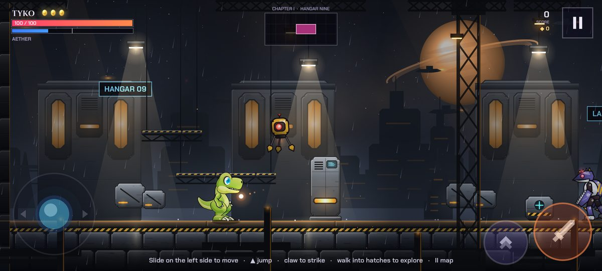
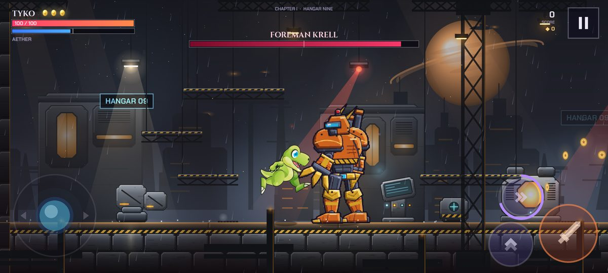
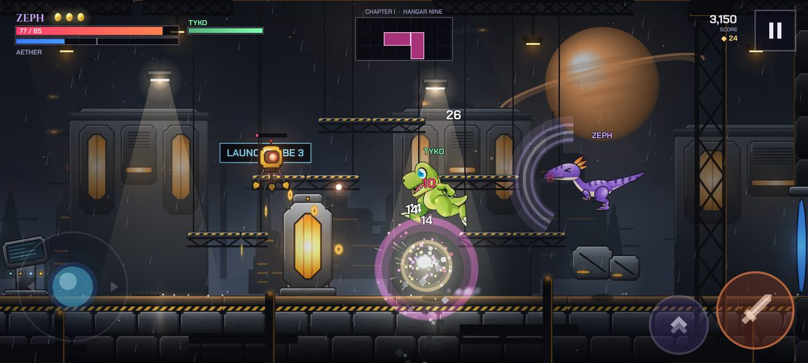
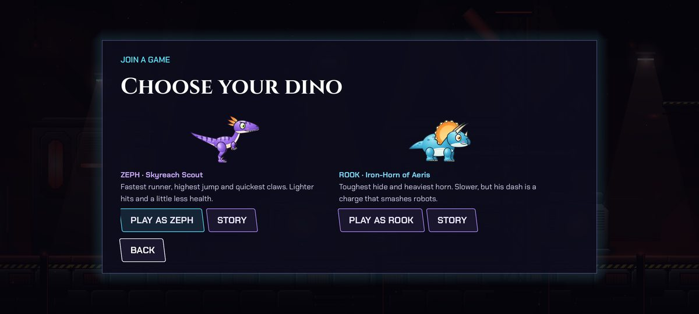
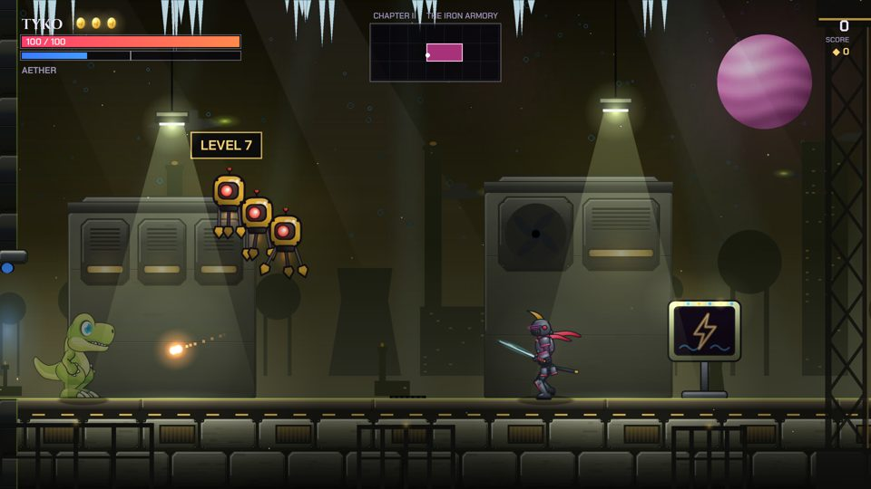
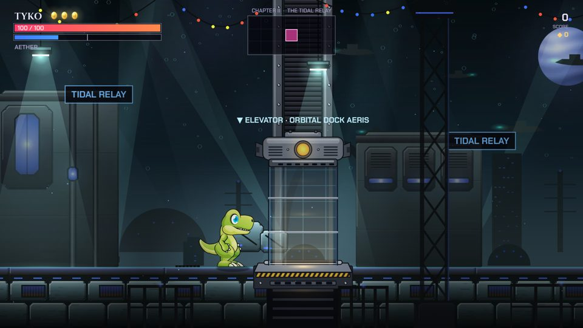
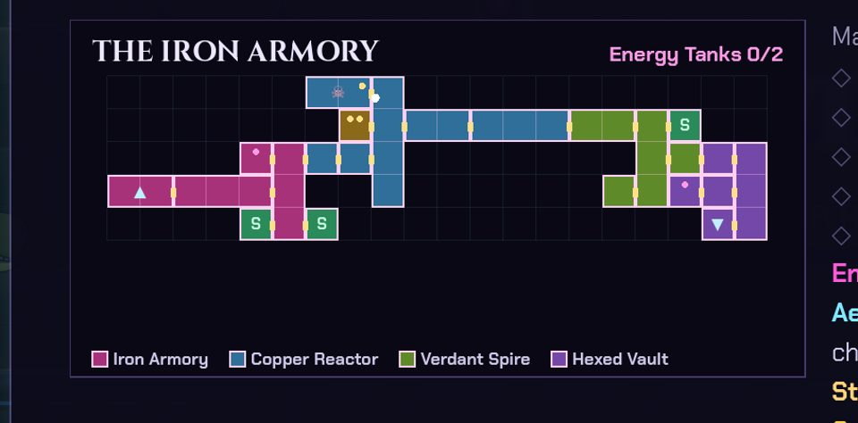

A Starblood saga · six worlds
One small dino. One stolen sky. One very big Rift.
Free. The browser version is about a 70 MB download the first time; it works on computers and on phones held sideways. Co-op needs the Android app.
For a thousand years the kingdom of Ithra ran on the Aether, the living light between the stars, guarded by the Starblood, a clan of dinosaurs whose claws could hold starlight. Then the Egg-Keeper Malakar tore open a Rift at the world's core, fused his followers with iron and shadow, and hunted the Starblood until none were left.
Thirty years later, deep in Hangar Nine, one egg cracks. Out tumbles Tyko: small, green, and very hungry, with a star-spirit named Lyra living in his collar. Six worlds, five shrine guardians and one Void Sovereign stand between him and the dawn.
A new map every game. Each new game builds all six worlds fresh: about 25 rooms each, spread over 26 different districts, from the Hexed Vault to the Twilight Causeway. Where the routes go, where the shrine guardians wait, where the save stations, energy tanks and secret vaults are hidden: all of it changes every time. Every map has a short map code on the pause screen, so a friend can play the exact same one, and Shuffle powers mixes up which shrine grants which power. Watch for Overcharged robots glowing gold: tougher, and worth extra Stardust. Try the Map of the day (the same map for everyone), clear the optional Trial rooms, and mind the icicles, toxic vents and sparking floors in some districts. Story mode takes 40% off the damage if you'd rather just explore.







The hero of the saga. Balanced claws and speed, a Comet Dash, a double jump and a Starburst roar, each found in the shrines.
A wild raptor from the cliffs who heard Tyko's roar and came down to adopt him as her little brother. Fastest runner, highest jump.
A triceratops hatched in a cargo crate and raised by dock robots. Slow, tough, and his dash is a horn charge.
Phone: slide on the left half to move, tap the buttons on the right to jump, strike, dash and roar. Tap II for the map.
Keyboard: A D move · W / Space jump · J strike · L dash · K roar · S drop · Esc map. Game controllers work too.
Android may ask you to allow installing apps from your browser the first time.